A 24-hour design exercise for the AMG Driving Academy: a dashboard for the one person who has to watch the track, the marshals, safety and the crowd, all at once.
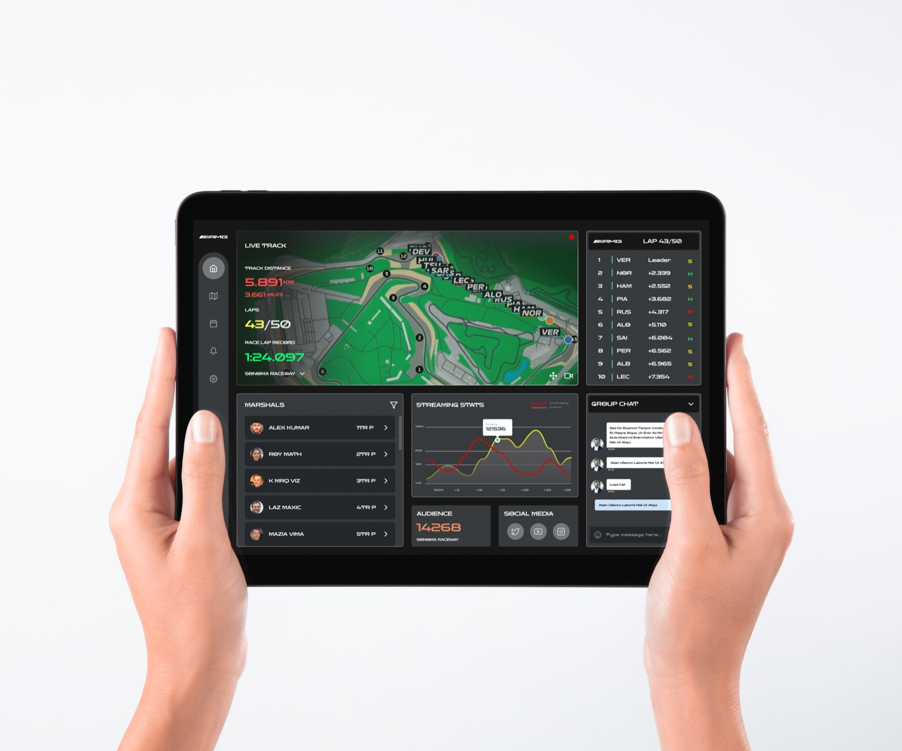
The brief: AMG wanted a platform for its Driving Academy — six levels of high-speed track events in Mercedes-AMG cars — that could host a race day end to end. Not just registration. The whole thing: who's on track, who's marshaling which corner, what the crowd is doing, whether the livestream is holding up.
I didn't have real organizers to sit with in 24 hours, so I worked backward from the job itself: everything that actually happens to put on a race, from the first planning meeting to the post-event cleanup. That process, not a persona interview, is what told me what the dashboard needed to show.
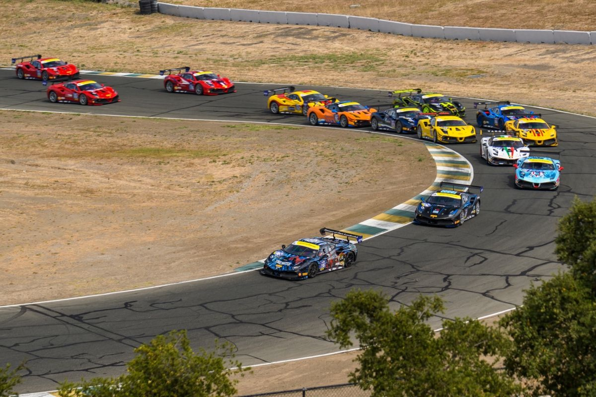
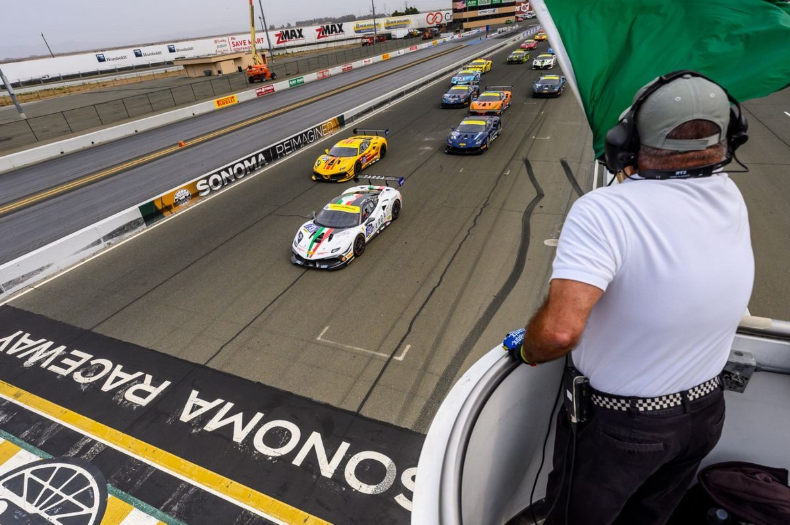
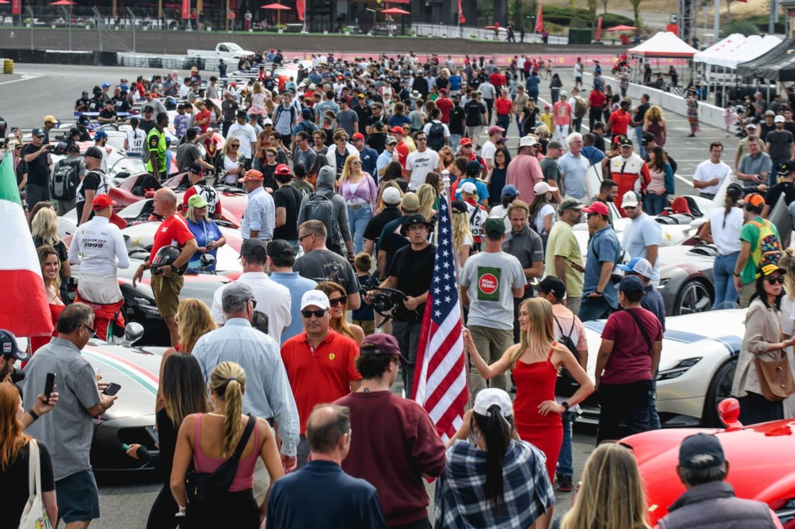
I sketched two organizer profiles to keep the design honest about who'd actually be using this under pressure — not real interview subjects, but two believable versions of the same job.
Detail-first. Runs races, conferences and festivals, and wants one place that shows every moving part rather than five browser tabs.
Handles marathons and triathlons. Needs live, trustworthy numbers so he can make a call on the spot, not after the fact.
Both of them need the same thing at different volumes: one view they can trust while standing trackside, not a dashboard they have to go hunting through. That single sentence became the design brief.
The live track map and leaderboard anchor the screen — that's the thing an organizer's eyes go to first. Marshals, safety, livestream numbers and a team chat sit around it, each one answering a question I'd have on race day: is everyone safe, is the stream up, who do I radio right now.
Distance, laps, lap record, and real-time positions with gaps — the one thing that has to be right at a glance.
Who's covering which post and whether they're reachable, so a problem gets a name attached to it fast.
Viewer count and social reach next to the operational data — the public side of the event, not a separate report.
No separate walkie-talkie app or group chat. Coordination happens on the same screen as everything else.
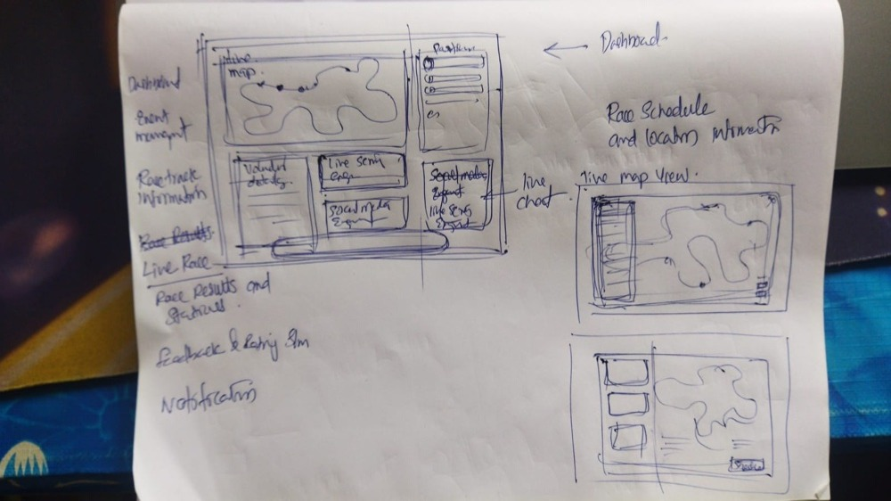
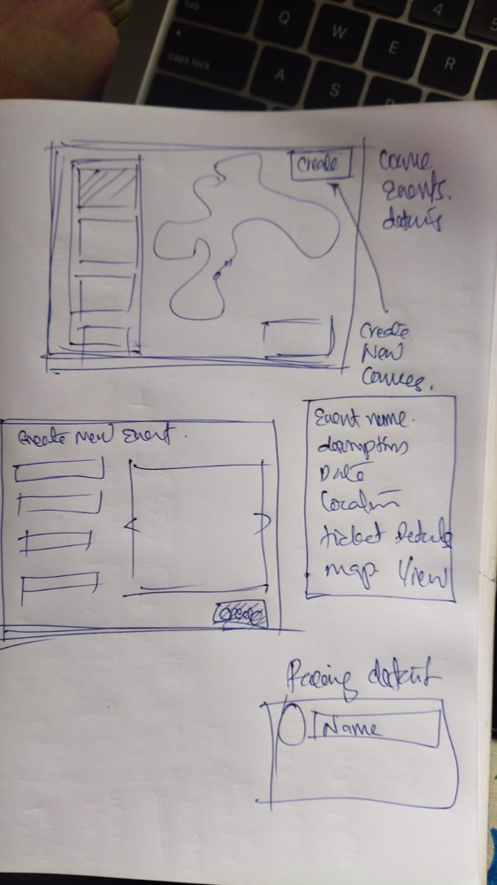
Spectators, participants and organizers all have a journey through race day. I sketched all three, then deliberately narrowed to the organizer — the one person whose job is to see everything else. That single cut is what made the timeline realistic.
Race days happen outdoors, often in full sun. A dark, high-contrast interface reads better on a tablet screen trackside than a light one would — a small decision, but the kind that matters more than it looks like it should.
Organizers manage from a laptop and carry a tablet. A phone screen is too small for the density this job actually needs — so rather than force a cramped mobile version, I left it out and gave the real devices the space they needed.
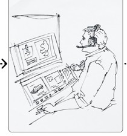
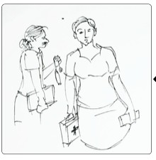
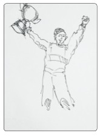
Sketching a full race day, start to finish, is what told me which screens actually mattered.
Five screens cover the job: the live command view, the driver's-eye track feed, the event catalogue, creating a new event, and the social numbers organizers are asked about most.
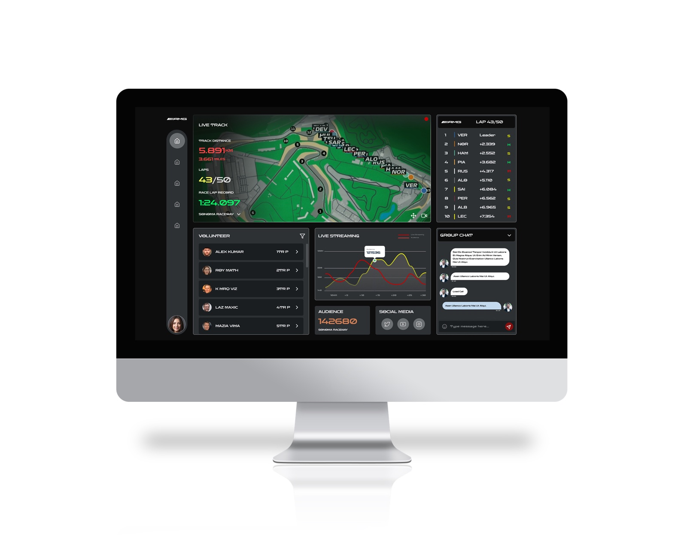
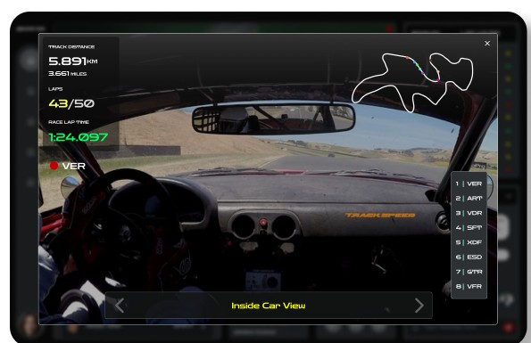
A driver's-eye feed with the live track overlay — for when the organizer needs to see the race, not just the numbers.
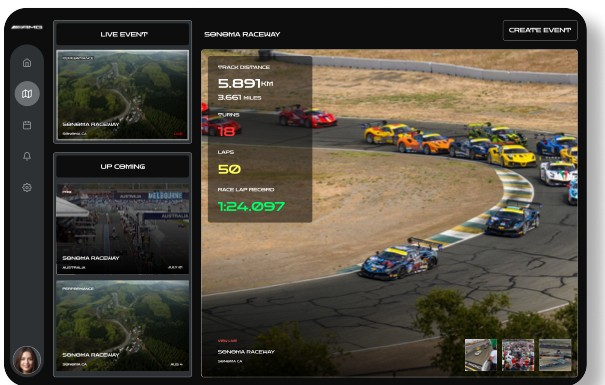
The event catalogue — what's live now, what's coming up, and the track it's running on.
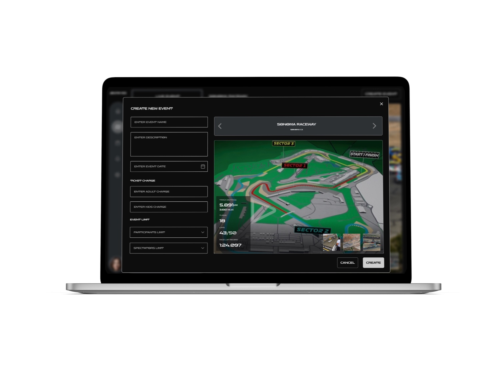
Name, date, track, ticketing and limits, with a live track preview so the details and the map stay in view together.
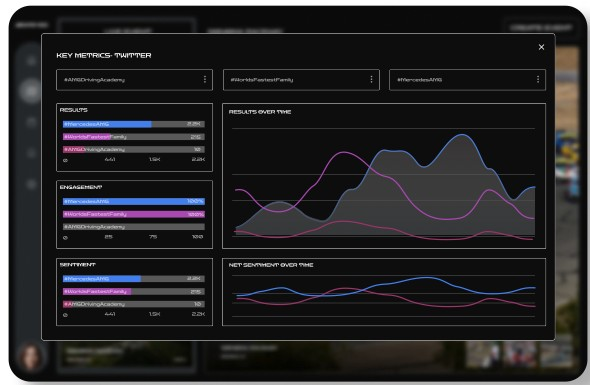
Engagement and sentiment on the event's hashtags — the question every sponsor asks, answered without a separate report.
There's no usage data to show — this didn't ship, and I want to be upfront about that rather than dress it up. What I can point to is the shape of the thing: research, two personas, three journey maps, paper sketches and five finished screens, done end to end in the time it takes to plan an actual race day.
The real test of the exercise was whether narrowing the scope — one user, two device sizes, one dashboard instead of a sprawling suite — would still produce something that felt complete rather than cut short. I think it does: an organizer glancing at this screen would know exactly where to look first.
Mapping all three audiences and then committing to just the organizer is what made the scope honest. It wasn't a corner cut — it's the decision that let the rest of the day go deeper instead of wider.
It would have been faster to open Figma straight away. Sketching the dashboard and the create-event flow by hand first was still worth the twenty minutes — it's where the actual layout decisions got made.
Every module earned its place by answering a real race-day question. If a screen didn't map to something I'd sketched in the storyboard, it didn't make the cut.